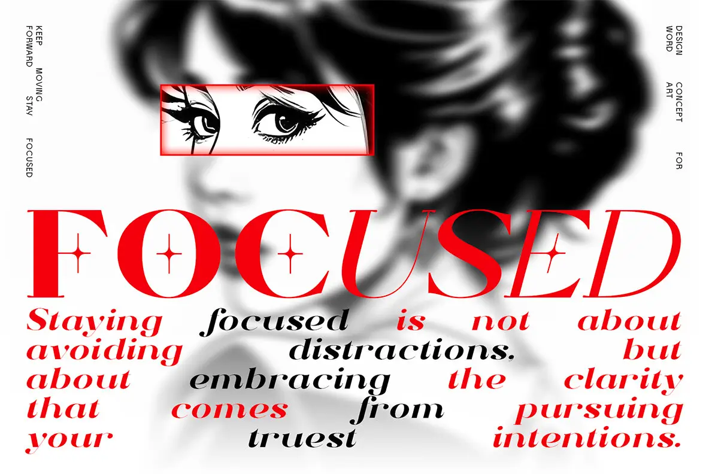

The browser layout keeps the original eye crop, open poster spacing, red ink, and five-column copy rhythm. Editable wording uses Title Case without forcing uppercase.
A source-led editorial study with a framed eye, oversized word, and staggered quote.

The browser layout keeps the original eye crop, open poster spacing, red ink, and five-column copy rhythm. Editable wording uses Title Case without forcing uppercase.